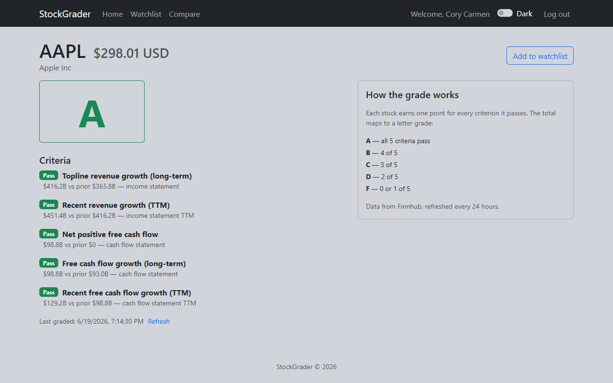

- React
- Vite
- Node.js
- Express
- MongoDB
- JWT
- Google OAuth
- Finnhub API
StockGrader is my full-stack capstone: a web app that grades any U.S.-listed stock on an A–F scale by analyzing five fundamental financial criteria, turning pages of financial statements into a single, quick-to-read assessment. It's deployed, authenticated, and tested on both the frontend and backend.

The problem
Fundamental analysis is powerful but intimidating. Deciding whether a company is financially healthy means reading income statements and cash-flow statements and knowing which numbers matter. For anyone who isn't already comfortable with financial reports, that's a wall.
I wanted to collapse that wall into something anyone can read in two seconds — a letter grade — without hiding the reasoning. The grade had to be explainable, honest about its limits, and backed by the actual numbers.
The approach: a transparent grading model
Instead of a black-box score, StockGrader checks five fundamental criteria focused on revenue growth and free-cash-flow health. Each criterion the company passes earns a point, and the total maps to a letter:
- A — all 5 criteria pass
- B — 4 of 5
- C — 3 of 5
- D — 2 of 5
- F — 0 or 1 of 5
Every criterion is shown with the real figures behind it (for example, "Topline revenue growth: $416.2B vs prior $365.8B"). The grade is a summary, not a substitute for the evidence.
The architecture
StockGrader is split into two deployed services so each piece can scale and be reasoned about on its own:
- Frontend — a React + Vite single-page app hosted on Vercel. It handles search, the grade card, the watchlist, and the compare view.
- Backend — an Express REST API on Render, backed by MongoDB Atlas through Mongoose. It does the grading, authentication, caching, and all the Finnhub calls.
- Auth — email/password with bcrypt-hashed passwords and JWT sessions (via Passport's
passport-jwt), plus Google sign-in verified server-side with Google's auth library. - Data — the Finnhub API supplies live quotes and financial statements.
Keeping the API key, grading logic, and database access entirely on the backend means the browser never sees a secret and never talks to Finnhub directly.
The engineering decisions I'm most proud of
1. Beating the rate limit with a cache
Finnhub's free tier allows 60 calls per minute, and grading a single stock takes about four calls. Without a plan, a handful of users refreshing watchlists would blow the limit instantly. So the backend caches every graded result in MongoDB for 24 hours, with an on-demand refresh when a user explicitly wants fresh numbers. Fundamentals barely move day to day, so this costs nothing in accuracy and keeps the app comfortably inside the free tier.
2. Being honest when the model doesn't fit
A free-cash-flow-based model doesn't fit every company. Banks and insurers work differently, so instead of printing a confident-but-wrong grade, StockGrader returns an honest N/A with a plain-English explanation. REITs and utilities get graded but carry a caveat noting that free cash flow is only a rough proxy for them.
It would have been easier to grade everything and look more "complete." Choosing correctness over coverage was the right call — a tool that lies confidently is worse than one that admits its limits.
3. Designing around a cold-start
The backend sleeps on Render's free tier and takes 30–60 seconds to wake. Rather than let the first user hit a frozen screen, the frontend warms up the backend on page load and shows spinners during sign-in, so by the time someone searches, the server is usually awake. It's a small touch, but it's the difference between "broken" and "just a moment."
4. Modeling change over time
The watchlist stores a grade-at-add snapshot for each stock, then compares it to the current grade so a user sees "▲ Upgraded," "▼ Downgraded," or "— No change." That meant thinking about data modeling, not just displaying the latest value — storing history to make comparison meaningful.
5. Testing both layers
Correctness matters when you're telling people a stock is an "A." The frontend is covered by a Vitest suite across helpers, components, and hooks; the backend is tested with Mocha, Chai, Supertest, Sinon, and an in-memory MongoDB so tests run fast and hermetically, without touching a real database. Testing across the whole stack is a habit I wanted to build early.
What I learned
StockGrader is where a lot of separate skills became one working product: wiring a React frontend to an authenticated Express + MongoDB API, integrating third-party financial data, handling auth and OAuth, and deploying two services that talk to each other in production. Just as important, it's where I learned that the interesting engineering is often in the constraints — the rate limit, the cold start, the companies that don't fit the model — and that handling them honestly is what makes a project feel finished.